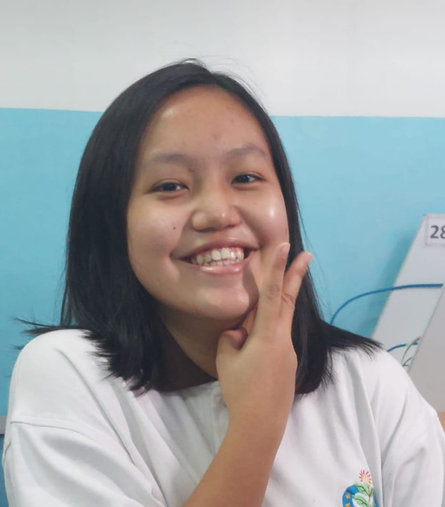
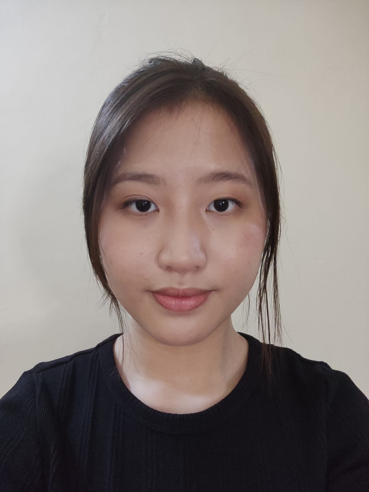
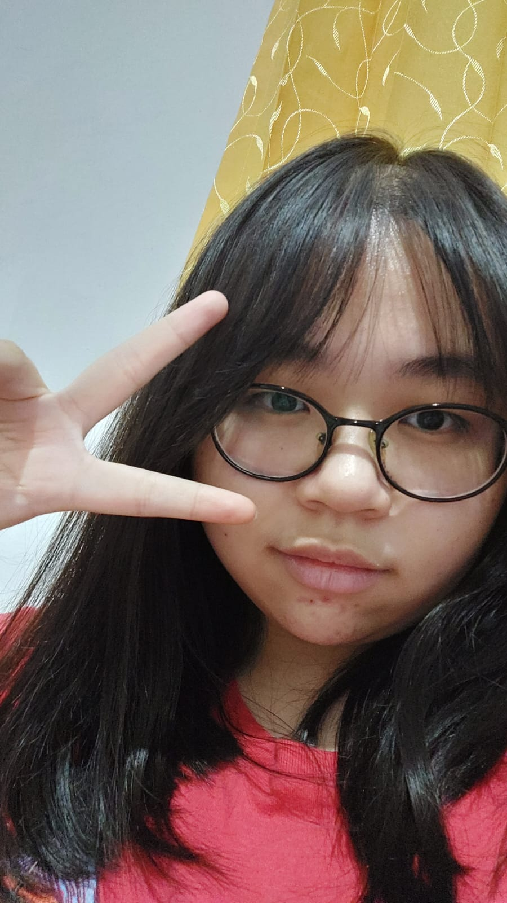

My Teams
Cheria Meivania
Cheria is a Taurus. She was born on the 15th of May in 2006. She is an only child and she excels in physical education.

Tricia Arella Taslim
Tricia is a Gemini. She was born on the 22nd of May in 2007. She has an older brother and two younger brothers. She excels in science-related things.
Arthemisvia Vanessa
Vanessa is a Gemini. She was born on the 3rd of June in 2006. She is the oldest child and has a younger sister. She excels in mathematics.

Renata Permatasari Ongko
Renata is a Libra. She was born on the 27th of September in 2006. She is the youngest child and has two older sisters. She excels in knitting.

Christy Jones
Christy is a Scorpio. She was born on the 7th of November in 2006. She is the youngest child and has an older sister. She excels in crochets.